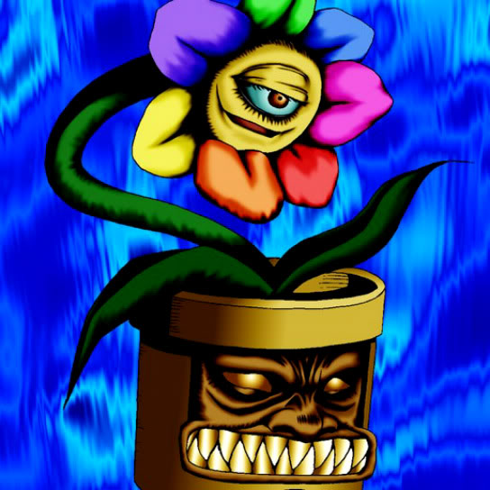

Rainbow Flower

STATS
ATK: 400
DEF: 500DECK COST
Deck Cost per Card: 9Fusion List (57 Possible Fusions)
- Rainbow Flower + Air Marmot of Nefariousness = Flower Wolf
- Rainbow Flower + Fairywitch = Queen of Autumn Leaves
- Rainbow Flower + Armaill = Bean Soldier
- Rainbow Flower + Armed Ninja = Bean Soldier
- Rainbow Flower + Armored Zombie = Pumpking the King of Ghosts
- Rainbow Flower + Baby Dragon = B. Dragon Jungle King
- Rainbow Flower + Corroding Shark = Pumpking the King of Ghosts
- Rainbow Flower + Crawling Dragon #2 = B. Dragon Jungle King
- Rainbow Flower + Crawling Dragon = B. Dragon Jungle King
- Rainbow Flower + Dancing Elf = Queen of Autumn Leaves
- Rainbow Flower + Dragoness the Wicked Knight = Bean Soldier
- Rainbow Flower + Drooling Lizard = Snakeyashi
- Rainbow Flower + Enchanting Mermaid = Queen of Autumn Leaves
- Rainbow Flower + Fiend's Hand = Wood Remains
- Rainbow Flower + Flame Ghost = Pumpking the King of Ghosts
- Rainbow Flower + Frenzied Panda = Flower Wolf
- Rainbow Flower + Greenkappa = Bean Soldier
- Rainbow Flower + Hane-Hane = Flower Wolf
- Rainbow Flower + Harpie's Pet Dragon = B. Dragon Jungle King
- Rainbow Flower + Hyo = Bean Soldier
- Rainbow Flower + Kageningen = Bean Soldier
- Rainbow Flower + Key Mace = Queen of Autumn Leaves
- Rainbow Flower + Koumori Dragon = B. Dragon Jungle King
- Rainbow Flower + Lesser Dragon = B. Dragon Jungle King
- Rainbow Flower + Little Chimera = Flower Wolf
- Rainbow Flower + Lunar Queen Elzaim = Queen of Autumn Leaves
- Rainbow Flower + M-Warrior #1 = Bean Soldier
- Rainbow Flower + M-Warrior #2 = Bean Soldier
- Rainbow Flower + Rainbow Flower = Pumpking the King of Ghosts
- Rainbow Flower + Magician of Faith = Queen of Autumn Leaves
- Rainbow Flower + Mask of Darkness = Rose Spectre of Dunn
- Rainbow Flower + Masked Clown = Bean Soldier
- Rainbow Flower + Mech Mole Zombie = Wood Remains
- Rainbow Flower + Meda Bat = Rose Spectre of Dunn
- Rainbow Flower + Monster Eye = Rose Spectre of Dunn
- Rainbow Flower + Muse-A = Queen of Autumn Leaves
- Rainbow Flower + Phantom Ghost = Wood Remains
- Rainbow Flower + Princess of Tsurugi = Queen of Autumn Leaves
- Rainbow Flower + Queen's Double = Queen of Autumn Leaves
- Rainbow Flower + Shadow Ghoul = Pumpking the King of Ghosts
- Rainbow Flower + Silver Fang = Flower Wolf
- Rainbow Flower + Sinister Serpent = Snakeyashi
- Rainbow Flower + Sleeping Lion = Flower Wolf
- Rainbow Flower + The Snake Hair = Pumpking the King of Ghosts
- Rainbow Flower + Synchar = Flower Wolf
- Rainbow Flower + The 13th Grave = Pumpking the King of Ghosts
- Rainbow Flower + The Little Swordsman of Aile = Bean Soldier
- Rainbow Flower + The Wandering Doomed = Wood Remains
- Rainbow Flower + Torike = Flower Wolf
- Rainbow Flower + Unknown Warrior of Fiend = Bean Soldier
- Rainbow Flower + Waterdragon Fairy = Queen of Autumn Leaves
- Rainbow Flower + Water Magician = Queen of Autumn Leaves
- Rainbow Flower + White Dolphin = 7 Colored Fish
- Rainbow Flower + Wolf = Flower Wolf
- Rainbow Flower + Wood Remains = Pumpking the King of Ghosts
- Rainbow Flower + Wretched Ghost of the Attic = Rose Spectre of Dunn
- Rainbow Flower + Yamatano Dragon Scroll = B. Dragon Jungle King